音视频运维监控管理系统
以远程监控中心实际页面截图展示功能、布局和操作入口。共 14 项，每项包含使用步骤与真实截图，可通过左侧目录跳转并点击截图查看原图。
这些截图来自实际运行的中心，而非设计示意图。通过本机 TLS 校验代理访问远程服务器；使用既有部署管理凭证只读浏览，页面可能不展示个人账号菜单。未提交注册、基准变更、密钥签发、通知测试或容器重启。启动参数值已在截图中隐藏。
账号登录
账号密码登录；注册需管理员开通。截图通过本机 TLS 校验代理访问实际远程中心。
使用步骤
- 输入已开通的账号和密码，点击“登录”。
- 同一浏览器刷新页面会恢复有效会话；会话过期后需重新登录。
- 通过页面右上角个人菜单修改密码或退出登录。账号密码错误时确认当前密码，待开通账号需要管理员先开通。
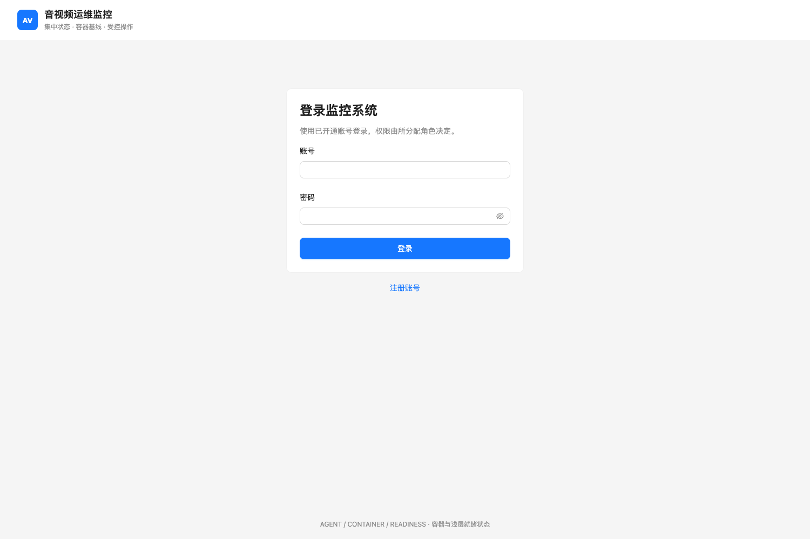
点击截图可在新窗口查看原图。注册账号
填写账号、显示名称和密码，提交后等待开通；本次没有提交注册。
使用步骤
- 在登录页点击“注册账号”，填写账号、显示名称和密码。
- 提交申请后等待 Agora 人员开通；注册成功不代表已取得访问权限。
- 开通后返回登录页登录。默认申请客户运维角色，权限由管理员确认。
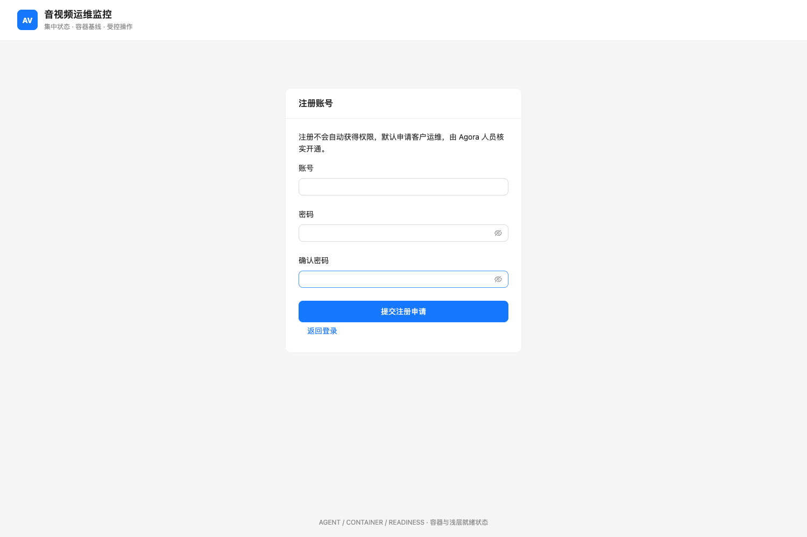
点击截图可在新窗口查看原图。服务状态与集群筛选
真实已纳管节点：容器名、IP、采集时间与右侧状态/重启/查看详情；资源摘要在下方。
使用步骤
- 选择“集群标识”查看指定集群，选择“全部集群”恢复全部显示。
- 查看容器名右侧的 IP、采集时间和状态；时间过期或状态未知时先检查采集通道。
- 点击“查看详情”展开下方页签，再次点击收起。
- 需要重启时点击“重启”，填写独立重启 Key ID、Secret 和操作原因；确认前查看服务影响和阻断提示。按钮灰色通常表示基准未开放；弹窗中的阻断原因表示其他执行条件尚未满足。
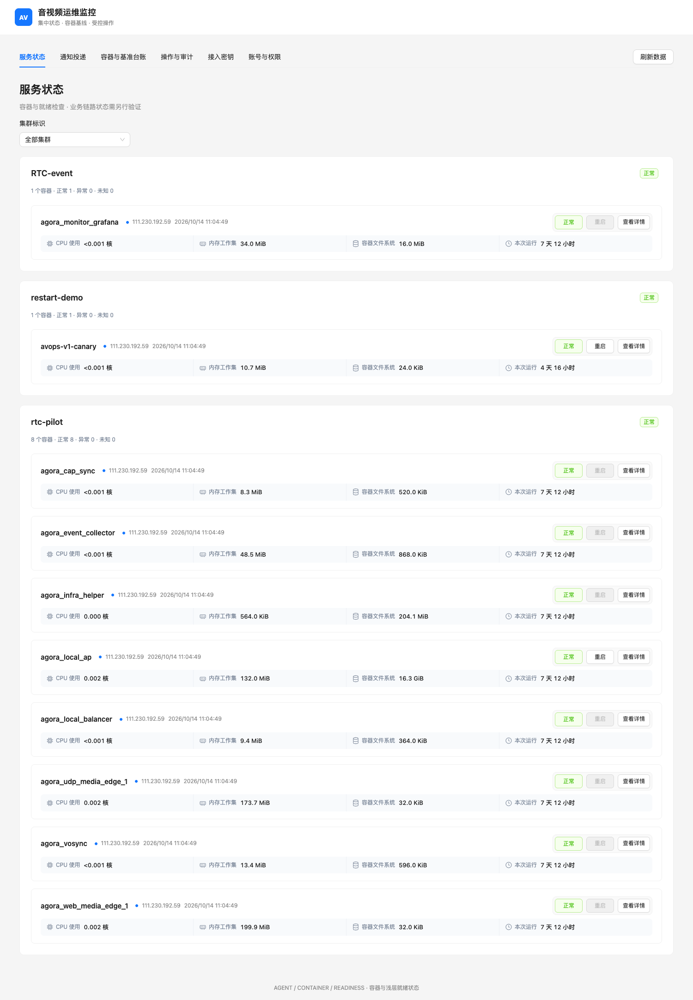
点击截图可在新窗口查看原图。资源详情
实际节点详情页签，缺失与共享指标按页面原样展示。
使用步骤
- 在容器卡片点击“查看详情”，切换到“资源详情”。
- 查看 CPU、内存、磁盘 I/O 和网络读数，结合采样时间判断是否为当前数据。
- “—”、未知、过期表示没有有效读数，不等于零。host 网络和共享资源不能按单个容器计算。
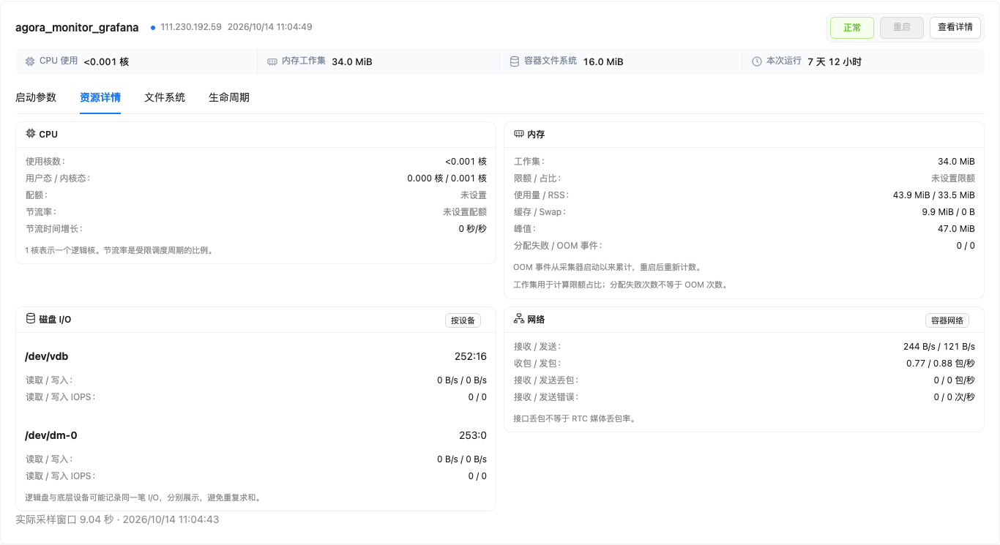
点击截图可在新窗口查看原图。文件系统
实际节点详情页签，缺失与共享指标按页面原样展示。
使用步骤
- 展开容器详情，切换到“文件系统”。
- 查看数据盘空间和 inode 的总量、剩余量及使用率，留意采集时间。
- 此面板展示宿主机共享数据盘；多个容器的读数不能累加。空间或 inode 不足时安排清理、归档或扩容。
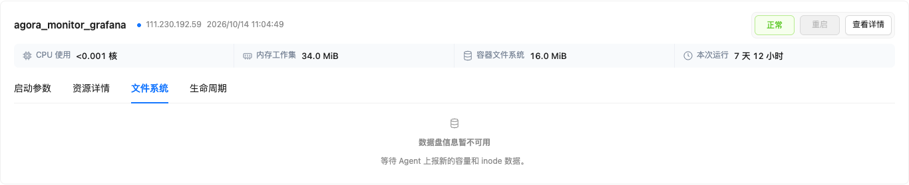
点击截图可在新窗口查看原图。生命周期
实际节点详情页签，缺失与共享指标按页面原样展示。
使用步骤
- 展开容器详情，切换到“生命周期”。
- 核对创建、启动、结束时间，以及退出码、OOMKilled 和 Healthcheck。
- Docker 自动重启次数用于了解自动重启行为；人工重启的执行结果在“操作与审计”查看。
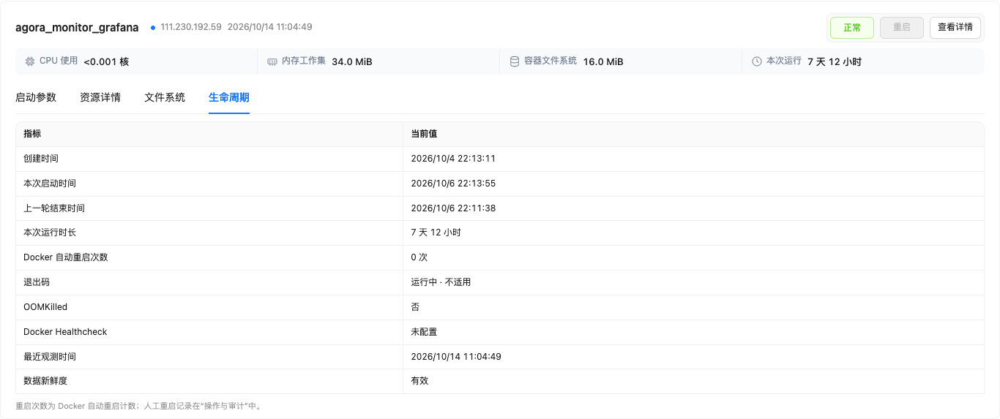
点击截图可在新窗口查看原图。启动参数
通过 Agent 现场读取。截图隐藏参数值以避免把现场凭证写入交付文档。
使用步骤
- 展开容器详情，切换到“启动参数”，等待 Agent 现场读取完成。
- 在表格中查看镜像、命令、环境、挂载和端口；需要最新值时点击“重新获取”。
- 若读取失败，确认 Agent 在线后重试。此图册为隐藏参数值的截图，真实页面以当前权限和采集配置为准。
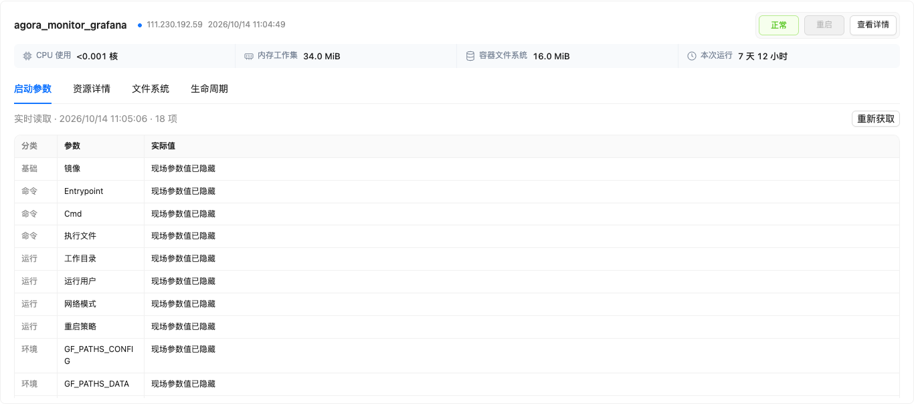
点击截图可在新窗口查看原图。容器与基准台账
主机与运行态筛选、候选列表、服务归属、变更预览、当前基准和 YAML 导出。
使用步骤
- 选择主机 IP、运行态后点击“筛选”，勾选需要纳管的候选容器。
- 填写集群编码，例如 rtc-pilot；以字母或数字开头，后续可使用字母、数字、下划线、点和连字符，最多 128 个字符。
- 按需填写 TCP 端口，例如 443, 8002；留空表示不新增 TCP 检查。不同端口的容器可分批添加。
- 点击“加入待保存变更”，检查紧接其下的“变更预览”；此时尚未保存到基准。
- 点击“保存并生效”，成功后在“当前基准”核对成员并下载 YAML。红色提示表示失败，应按提示修正；筛选不会移除基准成员。
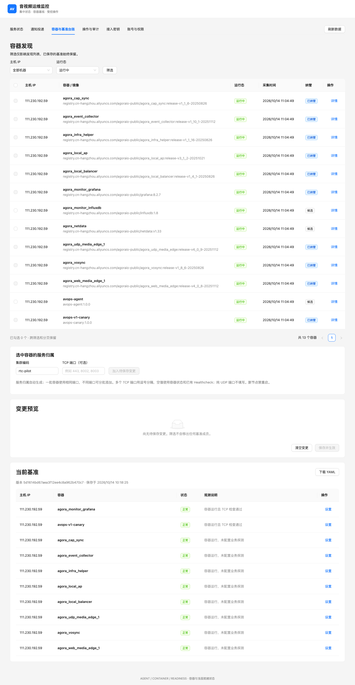
点击截图可在新窗口查看原图。节点设置
TCP 端口、重启开关与移出台账；本次仅查看，未保存。
使用步骤
- 在“当前基准”中找到目标容器，点击“设置”。
- 编辑 TCP 端口，或勾选/取消“开放该节点的重启权限”，点击“保存设置”。
- 重启开关只开放基准许可，实际执行仍需要有效 Key、双端规则和实时状态满足。
- “移出台账”加入待移出变更后，还需在变更预览中保存生效；移出台账不会删除或停止实际容器。
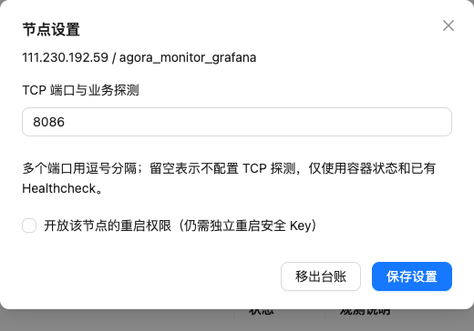
点击截图可在新窗口查看原图。操作与审计
真实操作记录、筛选、结果与底部存储容量。
使用步骤
- 进入“操作与审计”，使用搜索和结果筛选定位操作记录。
- 点击“详情与审计”查看目标、结果和过程；客户运维在“我的重启”查看本人记录。
- 进行中或结果未知的操作不要盲目重复提交；优先查询已有操作。
- 页面底部的存储容量展示数据库、数据盘和表占用；阈值用于提示，不是硬配额。
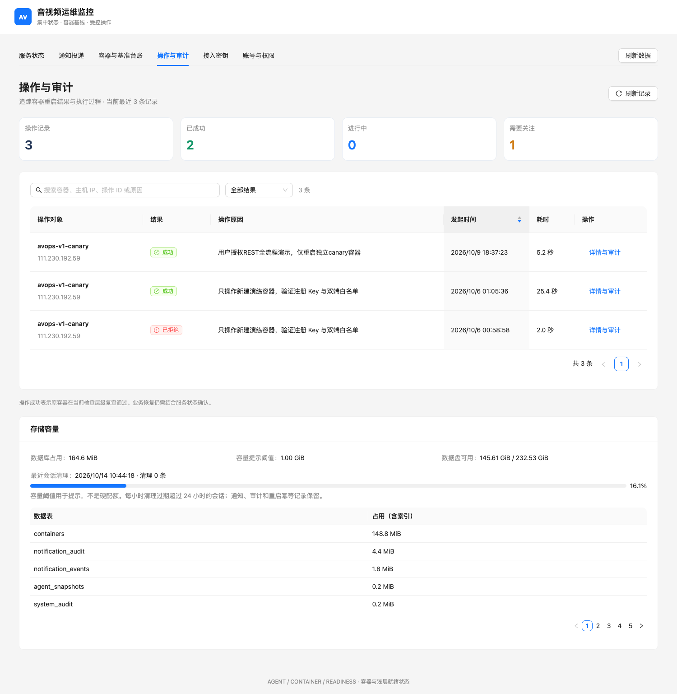
点击截图可在新窗口查看原图。操作详情与过程
既有操作的真实执行结果、来源和时间线。
使用步骤
- 在操作列表打开详情，核对目标容器、主机、发起原因、来源和时间。
- 按时间线确认执行阶段和结果，必要时复制操作 ID 供排查。
- 结果未知时需现场核实执行证据，再由具备权限的人员处理；关闭未知操作锁本身不会执行重启。
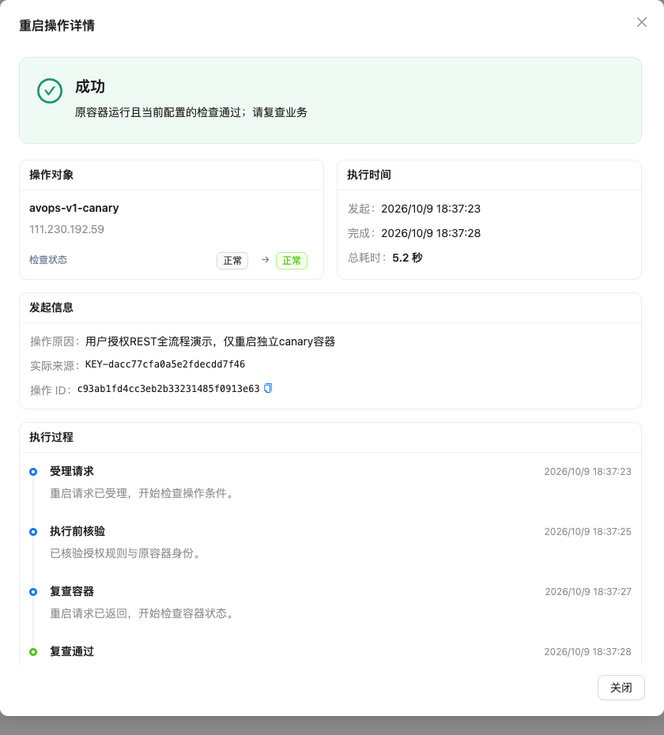
点击截图可在新窗口查看原图。通知投递
通知配置、投递统计与最近记录；本次没有修改配置或发送测试。
使用步骤
- 在“通知投递”中填写 HTTPS Webhook 地址、TLS 域名和独立签名配置。
- 确认接收端已准备好，再保存/启用通知；测试操作会向真实目标发送请求。
- 通过待发、已送达、失败、丢弃统计和最近投递定位问题；通知失败不会触发容器重启。
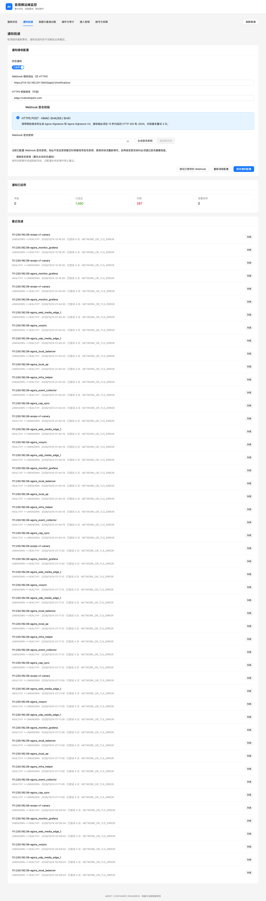
点击截图可在新窗口查看原图。接入密钥
重启 Key 签发和停用页面；本次没有签发或停用 Key。
使用步骤
- Agora 人员在“接入密钥”填写密钥名称，点击“签发密钥”；所属账号自动绑定当前登录账号。
- 签发结果中的 Secret 只显示一次，妥善保存后点击隐藏；不要把 Secret 写入图册或普通工单。
- 执行重启时填写对应 Key ID 和 Secret。停用 Key 后不能继续用于新操作；客户需使用绑定本人的 Key。
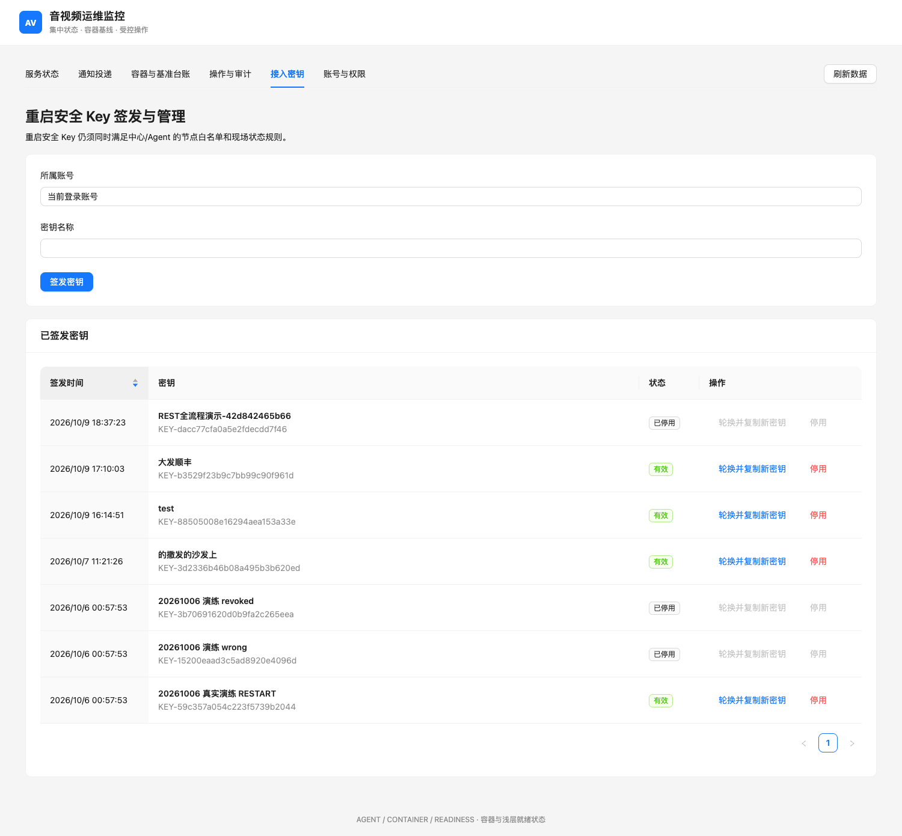
点击截图可在新窗口查看原图。账号与权限
固定角色与账号管理；本次没有变更账号权限。
使用步骤
- Agora 人员按账号状态筛选列表，找到待开通账号并打开管理入口。
- 确认账号身份后分配 Agora 人员或客户运维角色，并保存账号状态。
- 账号停用或角色变更会使旧会话失效；角色固定为两类，不支持自定义角色。
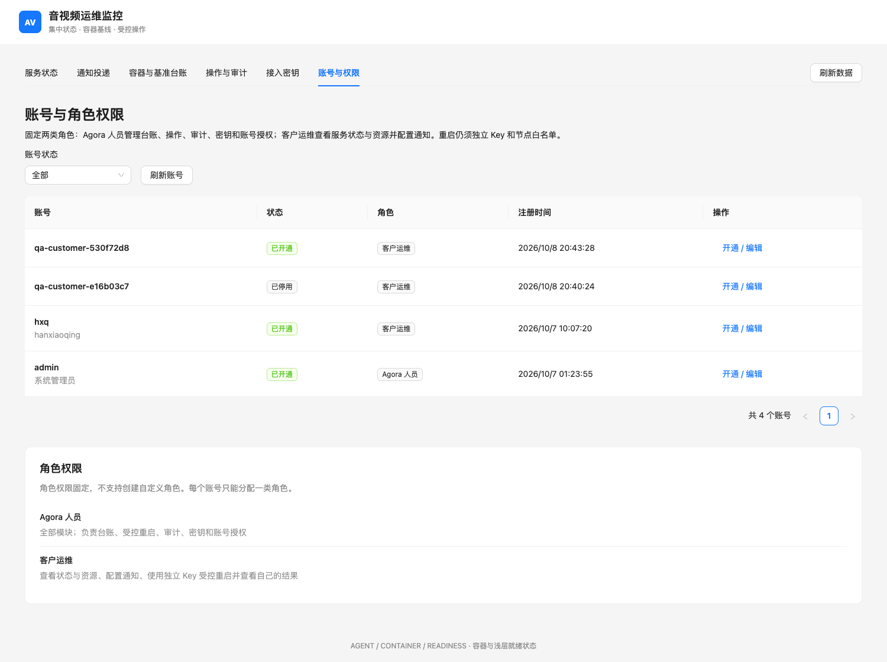
点击截图可在新窗口查看原图。